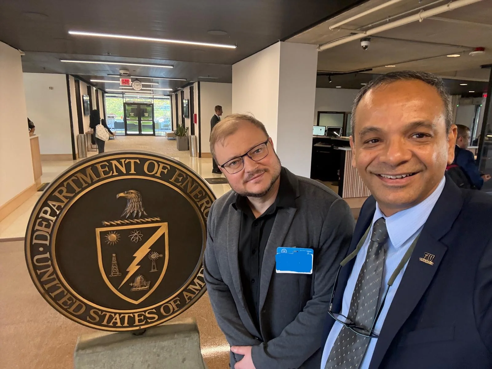
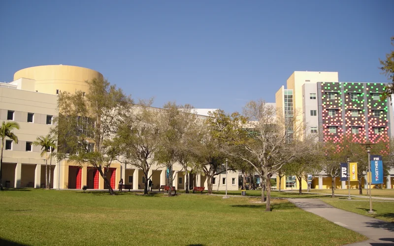

Complex-frequency chirped pulses on the cover of ACS Photonics
Our paper with Denis Seletskiy, “Complex-Frequency Chirped Pulses for Trajectory-Resolved Scattering,” is on the front cover of ACS Photonics 13(21) and is an ACS Editors’ Choice. Chirped pulses sample a device’s scattering response along a chosen path in the complex-frequency plane, which can test competing resonance models and count the poles and zeros inside a closed path.
Quantum discussions at the White House and U.S. Department of Energy
Prof. Krasnok met officials at the White House and the U.S. Department of Energy in Washington, D.C., to discuss priorities for quantum computing, science, and technology in Florida.
Meetings in Washington, D.C., on quantum science and technology in Florida.

At the U.S. Department of Energy.
Invited talk
Quantum computing through the lens of physics
Prof. Krasnok presented “Quantum Computing through the Lens of Physics” at the Physics, Astronomy and Materials Science seminar of Missouri State University.
FIU signed an agreement to acquire an IonQ Superion 256 trapped-ion quantum computer, expected on campus in late 2027. Prof. Krasnok, a co-founder of the FIU Quantum Initiative, contributes to research and teaching plans for the system.
A trapped-ion processor, the kind of hardware IonQ builds.
The Academy of Science, Engineering and Medicine of Florida selected Prof. Krasnok as a 2026 Rising Star in Engineering, to be recognized at its annual meeting in November 2026.
Putting student learning at the center of quantum investments
In Physics World, Prof. Krasnok argues that universities should judge quantum-computing investments by what students learn and can do with the hardware.
Prof. Krasnok joined the Fulbright Specialist Roster for August 2026 to August 2029, which makes him eligible for short-term projects at institutions abroad.
Selective loading of superconducting qubit circuits
Deepanshu Trivedi, Aditya Bhowmik, Laraib Niaz, and Aleksandr Krasnok designed microwave pulses that load one chosen mode of a shared-line qubit circuit while reducing reflection and excitation of neighboring qubits. The paper in Advanced Quantum Technologies was selected for a cover feature.
A paper with Denis Seletskiy in ACS Photonics uses chirped pulses to probe a scattering response along a chosen path in the complex-frequency plane. A paper in Physical Review Letters derives a design rule for a full 2π phase rotation at constant scattering amplitude.
Pole and zero of a resonator on the complex-frequency plane.
Quantum magnetometry for infrastructure; an alumnus joins Nokia
In Measurement, Muhammad Mahmudul Hasan, Ingrid Torres, and Aleksandr Krasnok review how atomic and diamond magnetometers could detect corrosion, stress, and electrical faults in infrastructure. Hasan, a former QTM Lab postdoc, joined Nokia in August 2026.
Open quantum-computing lectures and a new textbook
The Quantum Computing Lectures repository offers lecture notes, assignments, figures, and Qiskit notebooks for teaching and self-study. Prof. Krasnok’s textbook, Introduction to Quantum Computing and Sensing for Electrical Engineers: A Hands-On Guide, is forthcoming from Springer, with the hardcover due in February 2027.
Choosing quantum hardware for university research and teaching
“Universities Need Transparent Quantum Hardware,” in Nature Reviews Physics, and “What Quantum Computer to Buy?,” in AVS Quantum Science, weigh how universities should choose quantum systems: access, staffing, facilities, operating costs, and teaching needs.
A dilution refrigerator for superconducting qubits.
AFOSR support for complex-frequency plasma research
The Air Force Office of Scientific Research awarded $50,000 for “Complex Frequency Excitations in Natural and Artificial Plasma” (PI Prof. Krasnok, June to November 2026), which extends our work on shaped excitations to plasmas.
DOE/Brookhaven collaboration on electro-photonic processing
The QTM Lab joined El-Pho, a DOE and Brookhaven National Laboratory project on an integrated electro-photonic platform for near-sensor processing in extreme environments. Prof. Krasnok is the FIU subcontract PI; the subcontract has a $600,000 ceiling, with annual options through September 2029.
NVIDIA awarded 32,000 A100 GPU-hours to the lab’s CFQ-Control project for January to June 2026.
Prof. Krasnok was a finalist for the FIU Presidential Excellence Award and joined the 2026 cohort of the FIU Science & Fiction Lab Interdisciplinary Faculty Fellowship Institute.
Deepanshu Trivedi completed his Ph.D. in Electrical and Computer Engineering at FIU, co-supervised by Prof. Krasnok, and joined the Superconducting Electronics team of imec USA Florida as a Design Engineer.
Deepanshu Trivedi, Laraib Niaz, Aleksandr Krasnok, and Andrea Alù show in ACS Photonics that complex-frequency driving can excite one chosen resonator while suppressing crosstalk; FIU’s College of Engineering and Computing featured the study. On December 2, Prof. Krasnok spoke on waveform design for selective qubit control in an invited seminar at the University of North Texas.
Three days of quantum computing at FIU Qiskit Fall Fest
FIU hosted an IBM Quantum sponsored Qiskit Fall Fest with workshops, coding challenges, mentoring, and talks. Prof. Krasnok helped organize the event, which brought students together with researchers and industry speakers.
Prof. Krasnok organized FIU’s participation in Quantum Beach 2025 in West Palm Beach, which connected Florida universities, industry, and state leaders. In 2025, he and Prof. Janki Bhimani co-founded the FIU Quantum Initiative.
In Science, Seunghwi Kim, Aleksandr Krasnok, and Andrea Alù review complex-frequency excitations: shaping a wave in time can emulate gain or loss and control scattering, energy capture, and propagation without changing the material.
FIU Top Scholar in Research and Creative Activities
FIU named Prof. Krasnok a 2024–2025 Top Scholar in Research and Creative Activities, one of seven faculty members honored from the College of Engineering and Computing.
Gain–loss coupled systems on the cover of APL Quantum
The review “Gain–Loss Coupled Systems,” on how amplification, dissipation, and coupling shape classical and quantum devices, was on the front cover of APL Quantum.
Superconducting cavities and qubits for quantum information
A review in Applied Physics Reviews covers superconducting microwave cavities, Josephson-junction qubits, and bosonic encodings, and links material and device choices to the loss and noise that limit coherence.
A paper in Applied Physics Letters proposes Fano-type qubits with better isolation and bandwidth, using realistic circuit parameters and quantum simulations. It appeared in the journal’s 2023 Rising Stars Collection.
Prof. Krasnok taught Advanced Quantum Computers in spring 2023 and Introduction to Quantum Computers in fall 2023, FIU’s graduate and undergraduate quantum-computing courses.
The Bloch sphere, a picture used throughout the courses.
A Physical Review Letters study shows that complex-frequency excitations can push light scattering beyond the bounds that hold for steady illumination.
Computed reflection of a lossy resonator on the complex-frequency plane.
Single-resonator sensing on the cover of ACS Photonics
With collaborators at DTU and CUNY, we trapped a bound state in the continuum, a mode that stays confined although it could radiate, in a single resonator by shaping its boundaries, and used it to track small changes in water samples. The paper was on the front cover of the June issue of ACS Photonics.
Prof. Krasnok joined FIU’s Department of Electrical and Computer Engineering as an Assistant Professor and started the QTM Lab, with research in metamaterials, quantum photonics, wave control, and quantum-hardware interfaces.

The Chemistry and Physics building at FIU. Photo: Comayagua99, CC BY-SA 3.0, via Wikimedia Commons.